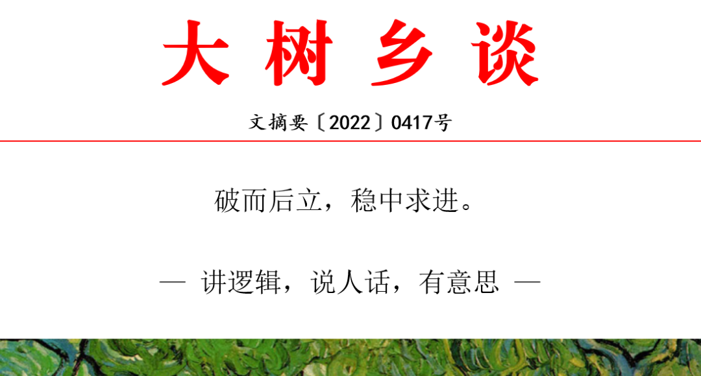

破坏性重塑需要择机

今天分享一个挺简单的道理，很有用但容易被人忽略。搞清楚这个道理并且运用好，不光对自己有好处，还可以更深刻地理解中国的政策和改革进程。 小镇前不久分享了一篇《活着，才有希望》，主要是谈注意保重身体、健康运动，不要过于疲劳，这样可以大大减少猝死等危险。在这篇里小镇特别说在办公室工作的人，要尽量减少在脑力工作一天后，再去健身房做强度比较大的运动，包括中长距离的跑步、无氧力量运动等。 当时有读者曾留言询问原因，今天再详细分享下，并且从健康运动出发如何去理解改革，有些道理是相同的。
运动可以增强肌肉，提高身体的新陈代谢等机能，从长期看一定大大提高身体的整体素质。但是，肌肉增强的过程实际分两步：第一步是对现在的肌肉产生损伤，第二步是肌肉在修复过程中得到强化。 这个过程，可以总结为：破坏性重塑。
破坏和重塑的每一步都需要消耗大量的能量和物质，而由于运动会刺激人体释放多巴胺等物质，导致神经更加兴奋，过度兴奋之后必然是加倍疲劳。 当然，从长期来看，保持良好的健身习惯，必然可以给人体带来非常大的好处，可以说运动解百病。
比如肌肉增多、脂肪减少、新陈代谢显著提高，可以有效减轻身体负担，关节、心血管、内脏更加健康，而更加强壮的肌肉可以更好地保护骨骼和内脏；身体以外，精气神也会大大提高，情绪更加稳定、积极，睡眠更好。 但一定要注意长期和短期并非完全一致，尤其是运动的长期价值前提是有足够的资源、选择合适的时机。 一定要明白，没有什么是平白从天上掉下来的。健身是一件有些奢侈的事，需要消耗更多的能量、物质、时间。假如一个人没有充足、健康的营养供给、相对自由的时间可以让人体恢复，那不专门运动可能更好。
这就有些类似于投资，假如一个人每个月赚的钱也就够维持生活，这时候再节衣缩食想着省一点钱未来可以去投资，那未必是好事。更加现实的应该是开源，在不影响基本需求的情况下适度节流，等盈余更多以后再去考虑投资。 运动健身的前提是必须休息好。还需要提醒的是，刷抖音、看电视剧、玩游戏等等都属于休闲，并不是休息，因为这些活动仍然需要消耗人的精力和脑力，甚至比工作更加疲劳，只不过因为太兴奋感觉不到罢了。 运动是要讲方法的，绝不是闷着头拼命，一定要有科学的理念，养成良好的健康管理意识。
比如要有一个好的运动习惯，每天选择低强度的比如散步、拉伸、走楼梯等小运动，减少中高强度的过度运动，还要定期体检，关注自己身体的细微变化。 更重要的是，要有充足的休息、健康营养的饮食，还要控制一些不利于身体的偏好，例如熬夜、酗酒、懒得动等等。 基本的理念就是如此了，每个人具体如何就看大家了，不再赘述。 说了这么多个人健身的，小镇还想说一点，就是关于国家最近的改革。 国家的改革与个人强健身体道理有些相通，都是破坏性重塑。改革就是“破旧立新”，就是要打破旧有的利益结构、运转体系，然后通过方方面面的资源投入，再重新建立更加符合未来的新结构。 这个过程中，如果选择的时机不对，又或者采取的改革措施过于猛烈。
这就像一个辛苦工作一天的人，本来已经非常疲劳了，还想着要健身、锻炼，硬撑着疲惫的身体，去跑个5公里然后再做几十组力量训练，好不容易撑下来了，又听着教练的夸奖，整个人感觉良好，又回头去加班。 一次两次还好，倘若一个月甚至几个月都如此，很可能没享受到身体更加健康的红利，人可能突然就不行了。 改革也如此。比如典型的俄罗斯的休克疗法，快是快了，也觉得休克完会更好，但就是没想到自己能不能扛过休克。 最近这几年，确实是国内改革难得的窗口期。
一方面全球变动加剧，新冠疫情、俄乌冲突等等对全世界造成较大冲击，美国能对中国施加的压力有所减少，在很多方面还需要中国的支持；另一方面，新冠疫情的冲击下，世界各国从过去全球化时代追求效率转向追求国家安全，比如全球供应链越来越倾向于本地化、区域化，中国的产业体系也受到较大冲击，何况中国越来越被美国卡脖子。
无论是为了未来发展，还是摆脱钳制，中国都需要加速改革。但是一旦改革速度过快，超过了承受限度，也会出现很多问题。比如从去年以来，国内外资本、企业界担心中国未来政策的不确定性，出现预期转弱，也影响到了中国的经济和社会发展。
所以，最近连续几次重大会议都强调，对于有收缩效应的政策要慎重出台，而有利于经济稳定的政策要积极推进，政策发力还要适当靠前。 核心就是要稳中求进。 这个道理同样可以用个人健身的“破坏性重塑”来理解，就是在前期对旧有的进行“破坏”后，在“重塑”完成令机体更加强健前，后续的“破坏”或者说改革，要缓一缓、看一看，可能还要调整。 当然，国家很大、需要改革的领域很多，“破坏”和“重塑”在不同领域的节奏有所不同，但需要更加择机，这就要从实际出发，更加灵活的启动后续计划。
还需要注意的是，就如小镇昨天《不要搞得太精细，一定要有冗余》提到的，不单单疫情防控，个人、组织、国家都需要一定的冗余，尤其是牵扯重大的改革，更是要做好更加充足的准备。
其他文章推荐
■ 活着，才有希望
■ 2022年中国房地产政策、房价及个人选择
如果喜欢，还请点赞、“在看”和关注吧 欢迎分享，让更多人发现“大树乡谈”